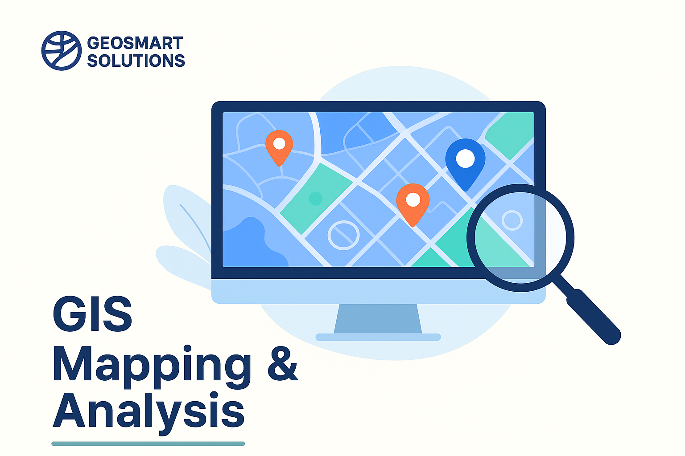

Our Services

GIS Mapping
Professional map-making and geospatial database creation for municipalities and firms.
Urban & Regional Planning
Data-driven spatial development frameworks, local plans, and zoning support.

Spatial Data Analysis
Turning raw geospatial data into insights for infrastructure and development projects.
Remote Sensing
Satellite imagery processing for land use, vegetation, and environmental monitoring.
Training & Capacity Building
Hands-on GIS training programs for institutions, municipalities, and individuals.
Environmental Planning
Supporting sustainable planning with environmental assessments and spatial tools.